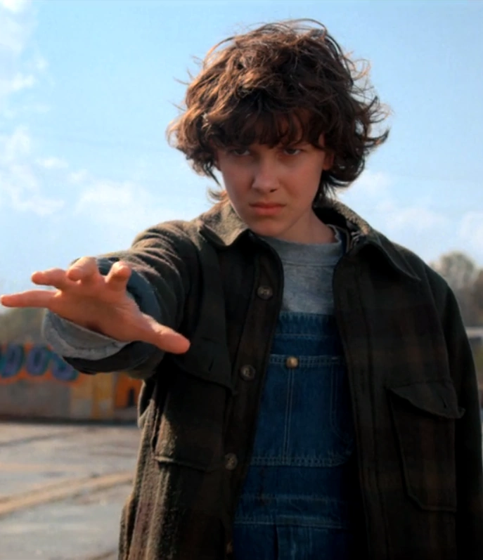
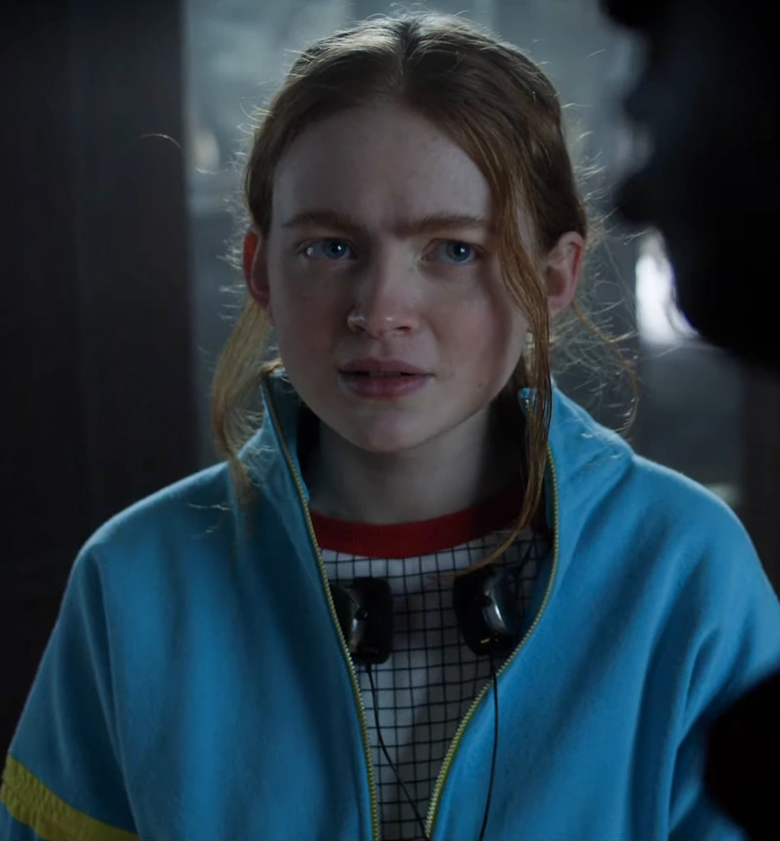

STRANGER THINGS

STRANGER THINGS is a science-fiction horror web television series created, written and directed by
the
Duffer Brothers, and executive-produced by Shawn Levy. The show was released as a Netflix original series
premiering on July 15, 2016. The show takes place in the fictional town of Hawkins, Indiana in the
early-to-mid 1980s. When a young boy vanishes, Hawkins becomes embroiled in an extraordinary mystery
involving secret experiments, terrifying supernatural forces and one strange little girl...

CHARACTERS

Eleven was kidnapped as a newborn by Dr. Martin Brenner and raised in Hawkins National Laboratory, where she
was experimented on for her inherited psychokinetic abilities. After escaping the lab, she was found by
Mike, Lucas, and Dustin. Upon discovering her abilities, Mike believed that she could help find Will, their
missing friend. During their time together, she and Mike formed a strong bond and quickly grew to like each
other. It was ultimately revealed that, in a lab experiment, she made contact with a creature from another
dimension, accidentally opening an interdimensional gateway. In an attempt to protect her friends, Eleven
eventually faced and destroyed this monster in a showdown at Hawkins Middle School, mysteriously vanishing
in the process.
- "Friends don't lie."
- "You are like Papa!"
- "Bitchin'."
- "A black hole?"
- "Compromise?"
>

When Mike's best friend, Will Byers, mysteriously went missing, he and his other friends, Lucas and Dustin,
made it their mission to find him. However, while searching for Will, they stumbled upon an escaped girl
named Eleven instead. Mike soon discovered that she knew something about Will's disappearance and enlisted
her help in finding him. During their time together, Mike and Eleven formed a strong bond and quickly grew
to like each other. Once Will was found, Mike was happy that he had returned home safely; however, he was
greatly devastated by Eleven's sacrifice to defeat the Demogorgon.
- "Maybe we can call you El, short for Eleven."
- "Friends don't lie."
- "No, El, you're not the monster. You saved me, do you understand? You saved me."
- "I was thinking, maybe we can go to the Snow Ball together."
- "It's day 353. I had a bad day. I don't know, I guess I wish you were here. We all do. If you're out
there, just please, give me a sign....Eleven?"

Maxine "Max" Mayfield, portrayed by Sadie Sink, is a main character in Stranger Things, being introduced
in the second season. A newcomer to the Party, she is the former girlfriend of Lucas Sinclair, and the
best friend of Mike Wheeler, Jane "Eleven" Hopper, Dustin Henderson, and Will Byers.
- "Friends don't lie. Boyfriends do."
- "You wanna kill that thing with...fireworks?"
- "That's presumptuous of you."
- "From now on, you leave me and my friends alone. Understand?"
- "Totally Tubular."